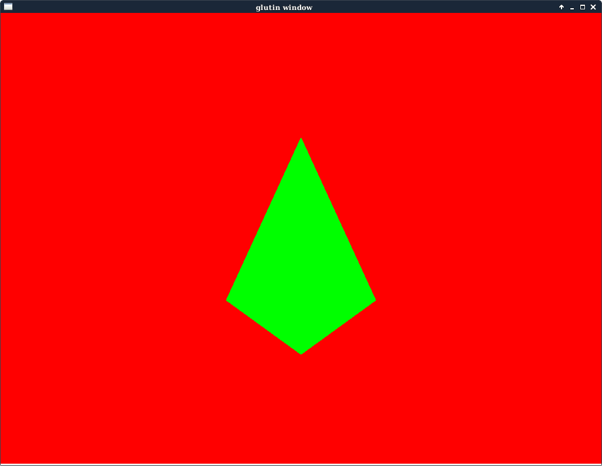

GraphicsInRustViaHeadBashing
I'm trying to learn standard opengl, but by using rust.
Since I couldn't find a tutorial that did what I wanted I figured I'd document my progress here. This will probably be a project journal type thing, and hopefully contain information useful to others. It will also likely include me complaining, but hopefully in a good natured way. I've never done this before so idk how this will work out.
Project goal
Fiddle around and make some 3d graphics, maybe eventually make a game that has graphics like starfox from the snes. But for now I think I'd be cool with a rotating cube. My goal is not to learn just the rustic ways of graphics, but to learn standard opengl as well.
Library choice
To fit with my goal of being as close to opengl as possible I am opting to use the gl-rs https://github.com/bjz/gl-rs library as opposed to gfx-rs or glium.
Hardware
I'm doing this on a dell latitude e6510 laptop I bought used and has...
OpenGL version string: 2.1 Mesa 10.3.2
So yeah a bit old.
For an os I'm running Debian Jessie, and for whatever reason I'm using rustc nightlies although stable might be smarter.
Well here goes nothing.
P0
To start off I'll just make a new cargo project P0, copy my preferred rustfmt.toml over and just work on making the examples from here https://github.com/bjz/gl-rs/tree/master/gl work.
Getting the first example "basic.rs" running was simply a matter of adding the "gl" and "glutin" dependencies to the Cargo.toml. Moving on to "Triangle.rs" (renamed to Main.rs of course) it should be easy, just a cargo build and.... well crap.
Running
target/debug/P0thread '' panicked at '0:1(10): error: GLSL 1.50 is not supported. Supported versions are: 1.10, 1.20, and 1.00 ES', src/main.rs:66 note: Run withRUST_BACKTRACE=1for a backtrace. Process didn't exit successfully:target/debug/P0(exit code: 101)
lets change the shader versions to 120.
thread '' panicked at '0:2(1): error:
in' qualifier in declaration ofposition' only valid for function parameters in GLSL 1.2
crud. But after a bit of googling and bouncing here https://www.opengl.org/discussion_boards/showthread.php/181729-Invalid-qualifiers-in-in-global-variable I changed these shaders:
// Shader sources
static VS_SRC: &'static str =
"#version 150\n\
in vec2 position;\n\
void main() {\n\
gl_Position = vec4(position, 0.0, 1.0);\n\
}";
static FS_SRC: &'static str =
"#version 150\n\
out vec4 out_color;\n\
void main() {\n\
out_color = vec4(1.0, 1.0, 1.0, 1.0);\n\
}";
to
static VS_SRC: &'static str =
"#version 120\n\
attribute vec2 position;\n\
void main() {\n\
gl_Position = vec4(position, 0.0, 1.0);\n\
}";
static FS_SRC: &'static str =
"#version 120\n\
void main() {\n\
gl_FragColor = vec4(1.0, 1.0, 1.0, 1.0);\n\
}";
And I get a nice white triangle.
This would be a good place to stop for the night, but you know it's winter in Ohio, and I'd like to think about spring; so I think I'll edit it to a nice green triangle instead.
Final thoughts: It's good that it is working, next time I think I/we should look into why it works. Also I'm sure I'll come back to look at this and wonder how I made so many grammar mistakes... I should probably figure out how to add pictures.
Digging deeper into the gl-rs triangle example.
Alright, I think I'll run through the example top to bottom and guess how it works. I could be totally wrong however.
License
First off this thing is apache licensed, presumably since I've left that alone all is fine here.
Externs/uses
Pretty standard stuff here, gl and glutin both had to be in cargo.toml for this to work.
Vertices and shaders
First off we see a simple array floats that seem to be the x,y coords for our triangle, modifying them shows this to be true. Next:
static VS_SRC: &'static str =
I'm gonna say this is a Vertex Shader, I'm not 100% positive on what it does however.
gl_Position = vec4(position, 0.0, 1.0);\n\
Position seems to be the 2d coords, probably from the vertex array. The first number is probably the Z coord.....
So the last coord, well I doubt we're working in a relativistic system here so to google batman! http://stackoverflow.com/questions/9943636/why-not-vec3-for-opengl-es-2-0-gl-position and following there to gamedev, and a link in a post by "Jovan" http://bishopw.loni.ucla.edu/air5/homogenous.html its for linear transformations, neat. Just for fun setting this to different (non-zero) values seems to scale the triangle; which matches what I'd expect from the link.
Finally:
gl_FragColor = vec4(0.0, 1.0, 0.0, 1.0);\n\
This is how I made the triangle green, pretty obviously rgba colors here.
Compile shader
Well this would seem to load those shaders into opengl, nothing too crazy here. It's neat how the shaders are basically referred to by a uint handle.
Link Program
This seems to associate the shaders together, and returns a handle to that unit.
main
This seems to create the window, run the previous two fns, in fact nothing seems to interesting until we look at...
gl::GenVertexArrays(1, &mut vao);
Looking here https://www.opengl.org/wiki/GLAPI/glGenVertexArrays
We see that the 1 means we only want to create a single vertex array, and the pointer to va0 is a stand in for a C style int array with one element to store the new handle.
A similar pattern seems to hold, so I'll skip down to
for event in window.wait_events() {
Since I'm usually in c# land the first thing I notice is an event loop rather than some callbacky-delagatey-thing here, which is cool.
It looks like this just colors the background black and draws the triangle, just to be sure I've changed the background to be red, added a 4th vertex to the array in the vertices, and told it to draw another triangle using the last 3 coords like this.....
gl::DrawArrays(gl::TRIANGLES, 1, 4);
I think this will be the final modification to P0, to see the changes I made I suppose you can diff the main.rs file with the Triangle.rs file in gl-rs if you desire.
Final thoughts:
Keeping this record actually is forcing me to to look a little more in depth at how this works. So thank you anonymous reader for basically serving as a rubber duck on steroids!
P1
Since one of my gripes was a lack of a basic rust opengl tutorial, I think I will work through this https://en.wikibooks.org/wiki/OpenGL_Programming#Modern_OpenGL one designed for c/c++ and convert the examples to rust as I go... This adds a little more complexity to my directory structure, so P1 will be this book and TutorialXX will be each lesson from the book
Tutorial 01
The first tutorial from the book found here https://en.wikibooks.org/wiki/OpenGL_Programming/Modern_OpenGL_Introduction This is quite similar to the previous triangle example, but I converted it to rust. I tried to stay as much like C as possible, so the compiler complains about some names not being rusty enough.